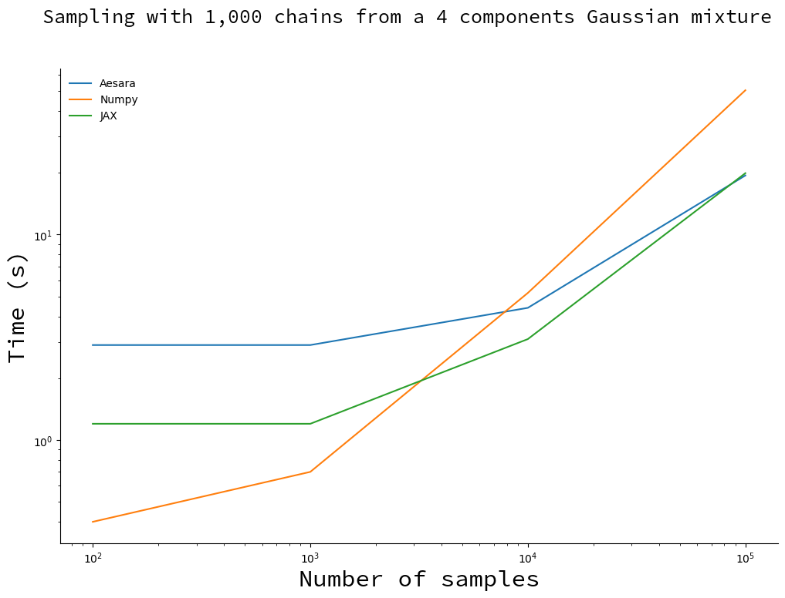

Random Walk Rosenbluth-Metropolis-Hastings in Aesara
Right before I started working on MCX I wrote a simple benchmarks for PyTorch, Tensorflow and JAX on a very simple problem: using the random walk Rosenbluth-Metropolis-Hastings algorithm to sample from a mixture distribution. MCX was discontinued a bit more than a year ago, when I started working with a PPL based on Aesara. So let me revisit this simple example using Aeasara!
The full code was added to the repository. For this example we use the C backend, though Aesara also offers a Numba and a JAX backend.
Mixture model
In the original blog post I set to sample from a mixture distribution with 4 components. I had to write the corresponding log-probability density function by hand, i.e. without using a PPL. Implementing a mixture model in Aesara is straightforward. No need for a Mixture distribution (like in e.g. PyMC), you just write it like it is:
import aesara.tensor as at import numpy as np srng = at.random.RandomStream(0) loc = np.array([-2, 0, 3.2, 2.5]) scale = np.array([1.2, 1, 5, 2.8]) weights = np.array([0.2, 0.3, 0.1, 0.4]) N_rv = srng.normal(loc, scale, name="N") I_rv = srng.categorical(weights, name="I") Y_rv = N_rv[I_rv]
We can generate forward samples from this model by compiling the model graph choosing Y_rv as an output:
import aesara sample_fn = aesara.function((), Y_rv) samples = [sample_fn() for _ in range(10000)] print(samples[:10])
[array(2.51645571), array(0.16094803), array(4.16173818), array(-0.75365736), array(0.91897138), array(-1.96086176), array(2.60226408), array(2.28198192), array(-1.05260784), array(1.38469404)]
If you are not familiar with Theano/Aesara, the aesara.function may surprise you. What does it do exactly? When you manipulate Aesara tensors, you are not manipulating numbers, but rather you are describing the computation to perform on the inputs. As a result, the result of an Aesara operation is a graph:
aesara.dprint(Y_rv)
Subtensor{int64} [id A]
|normal_rv{0, (0, 0), floatX, False}.1 [id B] 'N'
| |RandomGeneratorSharedVariable(<Generator(PCG64) at 0x7FBAB334F680>) [id C]
| |TensorConstant{[]} [id D]
| |TensorConstant{11} [id E]
| |TensorConstant{[-2. 0. .. 3.2 2.5]} [id F]
| |TensorConstant{[1.2 1. 5. 2.8]} [id G]
|ScalarFromTensor [id H]
|categorical_rv{0, (1,), int64, False}.1 [id I] 'I'
|RandomGeneratorSharedVariable(<Generator(PCG64) at 0x7FBAB17AE7A0>) [id J]
|TensorConstant{[]} [id K]
|TensorConstant{4} [id L]
|TensorConstant{[0.2 0.3 0.1 0.4]} [id M]
aesara.function is therefore used to compile the graph into a function that can be executed. For that, we need to specify the inputs and outputs of the function. In this case there are no outputs, and the value of Y_rv is the output.
To compute the log-probability density function we can use AePPL's joint_logprob function. AePPL transforms the Aesara model graph to get the graph that computes the model's joint logprob (see, working with computation graphs is nice!). We pass a dictionary that tells which value to associate with the random variables Y_rv and I_rv:
from aeppl import joint_logprob y_vv = Y_rv.clone() i_vv = I_rv.clone() logprob = joint_logprob({Y_rv: y_vv, I_rv: i_vv}) print(logprob.eval({y_vv: 10., i_vv: 3}))
-6.452221131239579
Here we do not really care about the values that I_rv takes, so we marginalize the log-probability density function over I_rv:
logprob = [] for i in range(4): i_vv = at.as_tensor(i, dtype="int64") logprob.append(joint_logprob({Y_rv: y_vv, I_rv: i_vv})) logprob = at.stack(logprob, axis=0) total_logprob = at.logsumexp(at.log(weights) + logprob) print(total_logprob.eval({y_vv: 10.}))
-6.961941398089025
Implement the algorithm
The random walk Rosenbluth-Metropolis-Hasting algorithm is also straightforward to implement:
def rw_metropolis_kernel(srng, logprob_fn): """Build the random walk Rosenbluth-Metropolis-Hastings (RNH) kernel.""" def one_step(position, logprob): """Generate one sample using the random walk RMH algorithm. Attributes ---------- position: The initial position. logprob: The initial value of the logprobability. Returns ------ The next positions and values of the logprobability. """ move_proposal = 0.1 * srng.normal(0, 1) proposal = position + move_proposal proposal_logprob = logprob_fn(proposal) log_uniform = at.log(srng.uniform()) do_accept = log_uniform < proposal_logprob - logprob position = at.where(do_accept, proposal, position) logprob = at.where(do_accept, proposal_logprob, logprob) return position, logprob return one_step
Syntactically, aesara.tensor looks like a drop-in replacement to numpy. Remember, however, that these functions do not act on numbers but add an operation to an existing graph of computation. In particular, logprob_fn is a function that takes a graph (possibly a single variable), and returns the graph that computes the value of the log-probability density function.
So, does it work?
Let us sample 1000 chains concurrently for an increasing number of samples and compare the running time to NumPy's and JAX's:

For small number of samples, Aesara (C backend) and JAX spend most of their time compiling the kernel and NumPy is faster. Past \(10^4\) samples NumPy lags behind, with Aesara catching up with JAX around \(10^5\) samples.
Perspectives
Aesara is still young and holds many promises for the future, come help us! Here is what you can expect to change with this example in the near future:
Maginalize automatically. AePPL will soon allow to automatically marginalize over discrete random variable (see related issue).
Vectorize computation. The implementation for the multiple chain sampler is currently close to NumPy's for performance reasons, but you should soon be able to write the kernel for a single chain, and use the equivalent of np.vectorize or jax.vmap to vectorize the computation (see related issue).
Work with different backends. You will soon be able to compile this example using Aesara's JAX backend and Numba backend (work in progress, you can already try it!). This means you will be able to interact with different ecosystems and leverage the strengths of different compilers / hardware devices with the same model expression in python. This also means that your model code is more future-proof as you can make the backend move under it.
Build samplers automatically. AeMCMC analyzes your model graph and builds an efficient sampler for it.
Still not sure what Aesara is about? Read Brandon Willard's explanation.